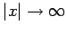
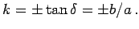
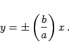
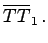
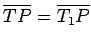
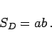
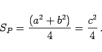

Inhalt Index DeskTop Bronstein

 Geometrie Vektoralgebra und analytische Geometrie Analytische Geometrie der Ebene Hyperbel
Geometrie Vektoralgebra und analytische Geometrie Analytische Geometrie der Ebene Hyperbel


Asymptoten der Hyperbel sind Geraden, die sich den Hyperbelzweigen für  unbegrenzt nähern (s. Definition der Asymptoten).
Der Richtungskoeffizient der Asymptoten ist  Die Gleichungen der Asymptoten lauten
|  | (3.357) |
Die Asymptoten bilden gemeinsam mit der Tangente an die Hyperbel in einem Punkt P das Tangentenstück der Hyperbel, d.h. die Strecke  Das Tangentenstück wird durch den Berührungspunkt P halbiert, so daß  ist. Der Flächeninhalt des Dreiecks TOT1 zwischen der Tangente und beiden Asymptoten beträgt für jeden Berührungspunkt P
|  | (3.358) |
Der Flächeninhalt des Parallelogramms , das von den Asymptoten und zwei zu ihnen vom Punkt P ausgehenden Parallelen gebildet wird, beträgt
|  | (3.359) |